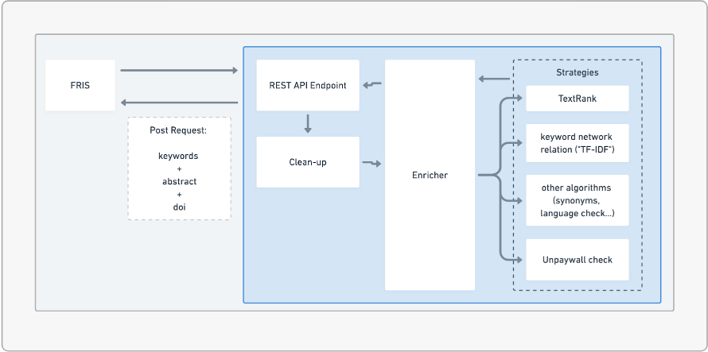

Welcome to FRISteam documentation¶
Open Knowledge Belgium¶
Presentation¶
Open Knowledge Belgium is an umbrella organisation (non-profit/vzw/asbl) for Open Knowledge initiatives. We’re a grass-roots organisation that consists of people, mainly volunteers, passionate about openness, using advocacy, research, technology and projects to unlock information, enabling people to use and share knowledge. We’re also one of the local chapters of the international Open Knowledge network. There are numerous Open Knowledge initiatives in Belgium. In order to give these communities access to resources faster, an umbrella organisation was needed. That’s where Open Knowledge Belgium comes in. We make knowledge sharing possible and let different organisations and cultures cross-polinate.
Mission and vision¶
Mission We want to open up knowledge in Belgium and see it used and useful. We endeavour to achieve this through both a bottom up and community driven way, as well as through working closely together with governments and organisations. We want to connect our four main actors: the community, researchers, governments and industries. Even more, we aspire to let them work together as a whole, instead of seperate units. Vision A world where knowledge creates power for the many, not the few. That’s what we’re going for. We believe that vibrant Open Knowledge commons will empower citizens and enable fair and sustainable societies. We aim to achieve this not only within the Belgian borders but inspire and get inspired by communities all over the world. We keep spreading the power of openness, hoping one day Open Knowledge will be the standard.
Open Summer of Code (OSOC)¶
Open Summer of code is a 4-week summer programme in July, that provides Belgian-based students with the training, network and support necessary to transform open innovation projects into powerful real-world services.
Purpose of the project¶
The goal of this project is to enrich the database of FRIS and more specific enrich the keywords of the publications
FlowChart of the project¶
This flowchart represent the architecture that we used to complete this project
{kind=link}
FRISteam.Cleanup package¶
Python module to clean data.
The characters that are not supposed to be there like ‘<p>’, are removed. The data is being placed into the right encoding.
-
FRISteam.Cleanup.datacleaning.actual_cleaning(text)¶ function actual_cleaning: Do the actual cleaning of the data.
- Args:
text (string): the original text
- Returns:
string: the cleaned text
-
FRISteam.Cleanup.datacleaning.clean_data(obj)¶ function clean_data: gets the project
- Args:
project (string): the original project data
- Returns:
string: the fully cleaned project data
-
FRISteam.Cleanup.datacleaning.clean_doi(doi)¶ function clean_doi: remove “acm” at the end of a doi url
- Args:
doi ([string]): doi url of the publication
- Returns:
string: cleaned doi without “acm”
-
FRISteam.Cleanup.datacleaning.clean_html(raw_html)¶ function clean_html: get the HTML-tags out of the data.
- Args:
raw_html (string): original string with HTML-tags in it.
- Returns:
string: clean string without HTML-tags
-
FRISteam.Cleanup.datacleaning.remove_nbsp(text)¶ function remove_nbsp: Remove non breaking spaces from data.
- Args:
text (string): original text
- Returns:
string: cleaned text without the nbsp
FRISteam.Enricher package¶
-
FRISteam.Enricher.enricher.enrich_project(project_object)¶ Generates new keywords for a project through a combination of different NLP strategies
- Args:
project_obj (Utils.fris_entities.Project): Instance of Project class
- Returns:
Utils.enricher_entities.ProjectResult: Instance of ProjectResult containing enriched data
-
FRISteam.Enricher.enricher.enrich_publication(publication_object)¶ Generates new keywords for a publication through a combination of different NLP strategies and finds the pdf of the publication through the DOI
- Args:
publication_obj (Utils.fris_entities.Publication): Instance of Publication class
- Returns:
Utils.enricher_entities.PublicationResult: Instance of PublicationResult containing enriched data
-
FRISteam.Enricher.enricher.get_best_keywords_en(abstract_en, keywords_en, max_number)¶ Collects max_number of new English keywords through NLP strategies
- Args:
abstract_en (string): English abstract keywords_en (list(string)): English keywords max_number (int): maximum number of keywords returned
- Returns:
list([string, float]): Returns a list of [keyword,score] tuples
-
FRISteam.Enricher.enricher.get_best_keywords_nl(abstract_nl, keywords_nl, max_number)¶ Collects max_number of new Dutch keywords through NLP strategies
- Args:
abstract_nl (string): Dutch abstract keywords_nl (list(string)): Dutch keywords max_number (int): maximum number of keywords returned
- Returns:
list([string, float]): Returns a list of [keyword,score] tuples
-
FRISteam.Enricher.enricher.get_keywords(abstract_en, keywords_en, abstract_nl, keywords_nl)¶ Help function that gets new English and Dutch keywords, concatenates them and returns them
- Args:
abstract_en (string): English abstract keywords_en (list(string)): English keywords abstract_nl (string): Dutch abstract keywords_nl (list(string)): Dutch keywords
- Returns:
list(Utils.enricher_entities.Keyword): List of instances of the Keyword class, the newly generated keywords with scores and language tags
-
FRISteam.Enricher.enricher.get_language_alerts(title_en, title_nl, abstract_en, abstract_nl)¶ [summary]
- Args:
title_en (string): [description] title_nl (string): [description] abstract_en (string): [description] abstract_nl (string): [description]
- Returns:
list(string): list of alert strings
FRISteam.ServiceManager package¶
-
FRISteam.ServiceManager.service_manager.process_project(project_obj)¶ This function sends a project object through data cleaning and passes the cleaned object to the enricher
- Args:
project_obj (Utils.fris_entities.Project): Instance of Project class
- Returns:
Utils.enricher_entities.ProjectResult: Instance of ProjectResult containing enriched data
-
FRISteam.ServiceManager.service_manager.process_publication(publication_obj)¶ This function sends a publication object through data cleaning and passes the cleaned object to the enricher
- Args:
publication_obj (Utils.fris_entities.Publication): Instance of Publication class
- Returns:
Utils.enricher_entities.PublicationResult: Instance of PublicationResult containing enriched data
FRISteam.Strategies.LanguageChecking package¶
-
FRISteam.Strategies.LanguageChecking.languageCheck.check_if_dutch(text)¶ function check_if_dutch : checks if the input text is in dutch
- Args:
text (string): The text which is checked if it is in dutch
- Returns:
boolean : returns true if dutch
-
FRISteam.Strategies.LanguageChecking.languageCheck.check_if_english(text)¶ function check_if_english: checks if the input text is in english
- Args:
text (string): The text which is checked if it is in english
- Returns:
boolean : returns true if english
FRISteam.Strategies.NetworkRelation package¶
-
FRISteam.Strategies.NetworkRelation.keyword_dictionary.compose_keyword_dictionary()¶ function compose_keyword_dictionary : reads in a csv file with keywords from all publications/papers and produces two json files (one English, one Dutch) to store the keywords with their frequencies for easier and faster access.
-
FRISteam.Strategies.NetworkRelation.keyword_dictionary.get_keyword_dict_en()¶ function get_keyword_dict_en : loads the English keyword dictionary into memory
- Returns:
dictionary {“keyword”:frequency}: dictionary with keywords and their frequencies from all projects/publications for English
-
FRISteam.Strategies.NetworkRelation.keyword_dictionary.get_keyword_dict_nl()¶ function get_keyword_dict_nl : loads the dutch keyword dictionary into memory
- Returns:
dictionary {“keyword”:frequency}: dictionary with keywords and their frequencies from all projects/publications for Dutch
-
FRISteam.Strategies.NetworkRelation.keyword_dictionary.read_en_dictionary_from_file()¶ function read_en_dictionary_from_file : opens the json file for the English keyword:frequency dictionary
-
FRISteam.Strategies.NetworkRelation.keyword_dictionary.read_nl_dictionary_from_file()¶ function read_nl_dictionary_from_file : opens the json file for the Dutch keyword:frequency dictionary
-
FRISteam.Strategies.NetworkRelation.networkrelation.calculate_relations(abstract, langTag)¶ - function calculate_relationscompares possible keywords (from an abstract) against the keywords from
other projects. Score per keyword raises with each overlap.
- Args:
abstract (string): an abstract (from project or publication) as a single string langTag (string): the language of the words in text (e.g. ‘en’ for English and ‘nl’ for Dutch)
- Returns:
tf_dict {dictionary of “keyword”:score}: dictionary with new keywords and scores
-
FRISteam.Strategies.NetworkRelation.networkrelation.calculate_term_frequency(tokens)¶ function term_frequency : calculates the frequencies of terms from a list of words
- Args:
tokens ([list of strings]): a list of strings (e.g. single words from an abstract)
- Returns:
dict: {dictionary of possible keywords with their frequency relative to the total amount of words}
-
FRISteam.Strategies.NetworkRelation.networkrelation.preprocess_abstract(text, langTag)¶ function preprocess_abstract : preprocesses a string (e.g. an abstract) with lowercasing, lemmatizing, stopword removal
- Args:
text (string): a string langTag (string): the language of the words in text (e.g. ‘en’ for English and ‘nl’ for Dutch)
- Returns:
list [of strings]: list of strings with the keyword candidates
FRISteam.Strategies.Synonyms package¶
The module containing functions for finding synonyms
-
FRISteam.Strategies.Synonyms.synonyms.get_synonym_by_word(word, langTag)¶ function get_synonym_by_word: get synonyms from a word in a specified language
- Args:
word (string): the word to find synonyms for langTag (string): the language of the word (e.g. ‘eng’ for English and ‘nld’ for Dutch)
- Returns:
dictionary: Counter dictionary of [synonym_string, frequency_score]
-
FRISteam.Strategies.Synonyms.synonyms.get_synonym_by_word_list(wordList, langTag, max_nr_synonyms=10)¶ function get_synonym_by_word_list : get synonyms from a list of words in a specified language
- Args:
wordList (list(string)): the list of words to find synonyms for langTag (string): the language of the words in wordList and the synonyms (e.g. ‘eng’ for English and ‘nld’ for Dutch) max_nr_synonyms (int): limits the number of synonyms in the output dictionary
- Returns:
counter dictionary : [synonym_string, frequency_score] in order of highest score
FRISteam.Strategies.TextRank package¶
-
class
FRISteam.Strategies.TextRank.textrank.TextRank4Keyword¶ Bases:
objectExtract keywords from text
-
analyze(text, langTag, candidate_pos=['NOUN', 'PROPN'], window_size=4, lower=False, stopwords=[])¶ function analyze : main function to analyze a text and calculates the weighting of keywords
- Args:
text (string): string to be analyzed (e.g. abstract) langTag (string): the language of the words in wordList and the synonyms (e.g. ‘eng’ for English and ‘nld’ for Dutch) candidate_pos (list, optional): the pos tags that are suitable candidates. Defaults to [‘NOUN’, ‘PROPN’]. window_size (int, optional): window size (dependency range). Defaults to 4. lower (bool, optional): lowercases all words or not. Defaults to False. stopwords ([type], optional): the list of excluded words. Defaults to list().
-
get_keywords(number=10)¶ function get_keywords : extracts the keywords with the highest scores Args:
number: maximum number of keywords extracted
- Returns:
keyword_list {“keyword”:score}: dictionary with keywords and their scores
-
get_matrix(vocab, token_pairs)¶ function get_matrix : builds a normalized matrix with the vocabulary and possible keywords
- Args:
vocab: dictionary with words and their frequency token_pairs: list of tuples with words and their sentence (by index)
- Returns:
list of lists (matrix)
-
get_token_pairs(window_size, sentences)¶ Build token_pairs from windows in sentences
-
get_vocab(sentences)¶ function get_vocab : creates a vocabulary dictionary
- Args:
sentences ([list of lists of strings]): single words from a sentence in a list of lists
- Returns:
dictionary {“word”:frequency}: dictionary with words and their frequency
-
sentence_segment(doc, candidate_pos, lower)¶ Store those words only in cadidate_pos
-
set_stopwords(stopwords, langTag)¶ function set_stopwords : sets stopwords
- Args:
stopwords: list of words that will be excluded as possible keywords langTag (string): the language of the words in wordList and the synonyms (e.g. ‘eng’ for English and ‘nld’ for Dutch)
-
symmetrize(matrix)¶ function symmetrize : symmetrizes the matrix
- Args:
matrix (list of lists): list of lists
- Returns:
matrix (list of lists): symmetrized matrix
-
-
FRISteam.Strategies.TextRank.textrank.textrank_keywords(abstract, langTag)¶ - function textrank_keywordsmain function to automatically extract keywords from an abstract with TextRank and
normalizes them between 0 and 1
- Args:
abstract (string): an abstract (or paper) as a string langTag (string): the language of the words in wordList and the synonyms (e.g. ‘eng’ for English and ‘nld’ for Dutch)
- Returns:
Counter(normalized_scores) {“keyword”:score}: dictionary with keywords and their score
FRISteam.Strategies.UnpaywallCheck package¶
Author Baudouin Martelee FRISteam
-
FRISteam.Strategies.UnpaywallCheck.doiPaywall.add_doi_object(publication_doi_url)¶ - Return a doi object to the Enricher containing for the doi different information like
doi, data_received_from_Unpaywall_api, no_paywall, pdf_url
- Args:
publication_doi (str): doi of a publication
- Returns:
Doi object: Doi object with the fields : doi, data_received_from_Unpaywall_api, no_paywall, pdf_url
-
FRISteam.Strategies.UnpaywallCheck.doiPaywall.add_pdf_information_of_doi(doi)¶ add the different information to the doi object because of its json file
- Args:
dois (str): doi
- Returns:
bool, bool, str : data_received_from_Unpaywall_api, no_paywall, pdf_url
-
FRISteam.Strategies.UnpaywallCheck.doiPaywall.extract_doi_from_url(doi_url)¶ Extract doi from a doi url
- Args:
doi url (str): doi url
- Returns:
doi: doi from the doi url
-
FRISteam.Strategies.UnpaywallCheck.doiPaywall.get_unpaywall_api_data(doi)¶ Get the json of the doi from the Unpaywall API and store it in the file “file_to_save_to”
- Args:
doi (string): doi
- Returns:
JSON string: Json string containing all the data from the Unpaywall API
FRISteam.Utils package¶
-
FRISteam.Utils.csv_reader.read(file_name)¶
-
FRISteam.Utils.csv_reader.read_with_lang(file_name, language)¶
Object that will be used to show the enricher’s results for projects and publications. The schema below follows the FRIS’ suggested schema: {
- “ProjectResult”: {
- “uuid”: “9168910c-f8af-4842-b6d7-04cbb1f79abf”,
- “keywords”: {
- “KeywordResult”: {
“Score”: “1.0005”, “Value”: “A.I.”, “Language”: “nl”
}, “KeywordResult”: {
“Score”: “2.0505”, “Value”: “Machine Learning”, “Language”: “nl”
}
}
}
}
-
class
FRISteam.Utils.enricher_entities.Doi(doi, data_received, no_paywall, pdf_url)¶ Bases:
objectDoi object that will be used in a PublicationResult Object. :param doi is the reference to the doi for the publication. :param data_received refers if the Unpaywall API can reach the doi or not. :param no_paywall declare if there is a paywall or not in the doi link. :param pdf_url refers to a pdf url if there isn’t a paywall.
-
class
FRISteam.Utils.enricher_entities.Keyword(score, value, language)¶ Bases:
objectKeyword result object that will show the enricher’s results. :param score is the score assigned by the enricher to the newly extracted keyword. :param value is the newly extracted keyword. :param language is the language of the new keyword extracted by the enricher.
-
class
FRISteam.Utils.enricher_entities.ProjectResult(uuid, keywords=None, alerts=None)¶ Bases:
objectProject result object that will show enricher’s results. :param uuid refers to the project that has been enriched :param keywords must be a list of KeywordResult :param alerts must be a list of string
-
class
FRISteam.Utils.enricher_entities.PublicationResult(uuid, doi, keywords=None, alerts=None)¶ Bases:
objectPublication result object that will show enricher’s results. :param uuid refers to the project that has been enriched. :param keywords must be a list of KeywordResult. :param doi is the reference to the doi for the publication. :param alerts must be a list of string
-
class
FRISteam.Utils.fris_entities.Keyword(keyword, locale, uuid)¶ Bases:
objectEntity object used for the keywords.csv file. The csv file contains 3 columns with keyword value, language and research output’s uuid. :param keyword the keyword’s value. :param locale the keyword’s language. :param uuid the research output’s uuid.
-
class
FRISteam.Utils.fris_entities.Project(uuid, title_en, title_nl, keywords_en, keywords_nl, abstract_en, abstract_nl)¶ Bases:
objectObject containing all the project’s data. :param uuid the project’s uuid. :param title_en the project’s english title. :param title_nl the project’s dutch title . :param keywords_en the project’s english keywords. :param keywords_nl the project’s dutch keywords. :param abstract_en the project’s english abstract. :param abstract_nl the project’s dutch abstract.
-
class
FRISteam.Utils.fris_entities.Publication(uuid, title_en, title_nl, keywords_en, keywords_nl, abstract_en, abstract_nl, doi)¶ Bases:
objectObject containing all the publication’s data. :param uuid the publication’s uuid. :param title_en the publication’s english title. :param title_nl the publication’s dutch title . :param keywords_en the publication’s english keywords. :param keywords_nl the publication’s dutch keywords. :param abstract_en the publication’s english abstract. :param abstract_nl the publication’s dutch abstract. :param doi publication’s doi link.
Team¶
We are a team of 6 people including 1 coach, 1 student coach and 4 students.
Nelissen Toon - Coach
Jolan Huyvaert - Student Coach
Angioni Gianluca - Student
Becker Lisa - Student
Bruynseels Emmy - Student
Martelée Baudouin - Student